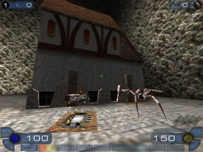
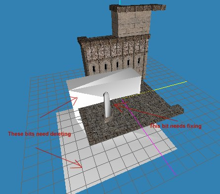

NeverWinter Nights To UT2003
This page explains how to get Neverwinter Nights Models into UT2003.
Note: Don't do this unless you have permission to from the model's original author, either express or implied. See Mod Copyright for details.
What You Need
This is quite a tricky process and requires the following:
- Neverwinter Nights
http://nwn.bioware.com - NWNExplorer for exporting models and textures from NWN
http://www.torlack.com/index.html?topics=nwnexplorer_readme - NWNMDLCOMP.EXE for converting the models to ASCII format
http://www.torlack.com/index.html?topics=nwnmdlcomp_readme - Milkshape3D for converting the models to LWO format
http://www.swissquake.ch/chumbalum-soft/ - The NWN Import Plugin for Milkshape3D (msMDLImporter.dll)
http://www.augustweb.com/~anim8r/downloads/msMDLImporter1.0.zip
Let's Import
Here's a tutorial on importing the phase spider from NWN.
|

|

Notes
The models are well tiny – so when you place them scale them up by at least 64x. Or you could scale them up in Milkshape prior to export. Scaling by 102.5 in UnrealEd makes them fit into a 1024x1024 square, which gives a good proportion. Importing most of the tileset models into milkshape produces a strange copy of most of the model with a NULL texture, as well as setting one of the "proper" model sections to a NULL texture. You will need to assign the correct texture to the missing section and delete the unwanted bits. Some of the textures have a mask (eg Splotch1) and you should tick the 'alpha' and 'mask' boxes when importing these textures. Before importing tileset models, load the ASCII model into notepad and delete any 'light' nodes. The presence of these also seems to throw the import out of whack (the model dissapears when the Anim mode is selected). |

|